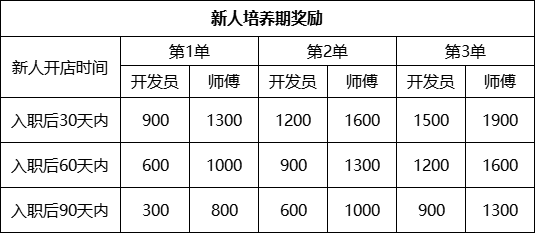

2026年市场开发部新人培养期激励方案2.0
一、方案目的：
为鼓励市场开发部新人快速融入工作并取得成果，同时调动资深员工带教热情，发挥传帮带作用，传承经验技巧，促进团队协作与整体业务能力提升，特拟定本激励方案。
二、新人培养期奖励规则：

三、相关说明和要求：
1、本奖金为公司额外增设的开店奖励，不影响开发员原有的开店提成标准。
2、原导师提成奖励方案作废。
3、核算时间为义工期结束后，试用期第一天开始计算，并且只针对入职90天内有奖励前3单，超过90天无奖励。超过第3单的无奖励。
4、如果新人没有师傅带领开店，则“新人培养期奖励”中师傅奖励部分也归该开发员所有。
5、重新带单入职的开发员不享受该激励政策的奖励。
6、如果因特殊原因闭店的，公司有权收回相应奖励，并保留相应处罚权利。
本方案自2026年01月01日生效，试行三个月，到期如无调整则继续延用。中途如果因特殊原因闭店、造成恶劣影响的，公司有权收回相应奖励，并保留追究相应责任的权利。
市场开发部
2025年12月10日